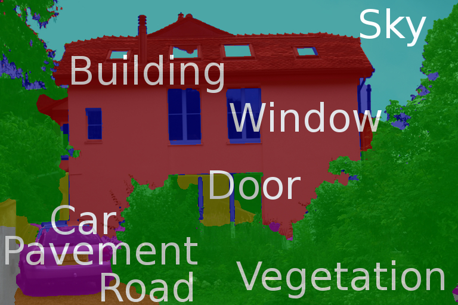
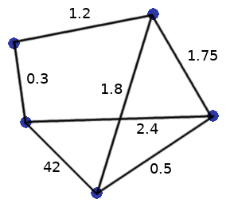
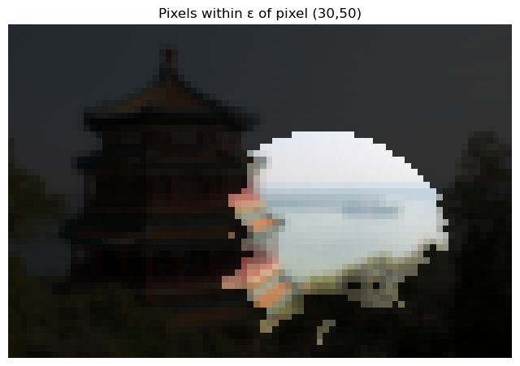
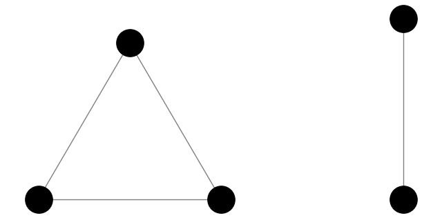
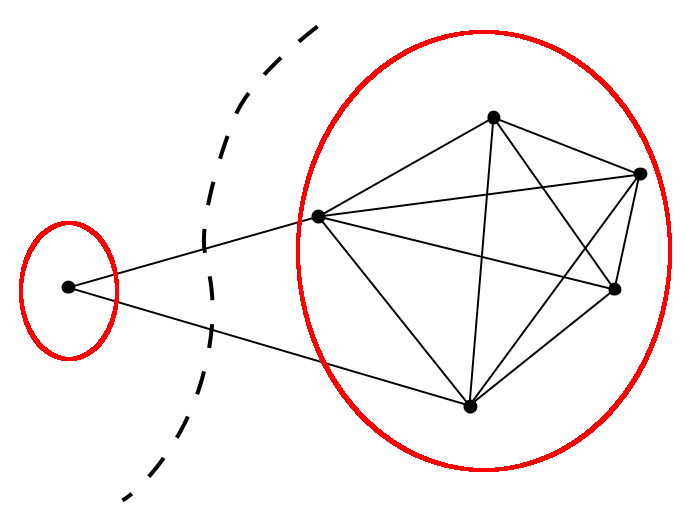
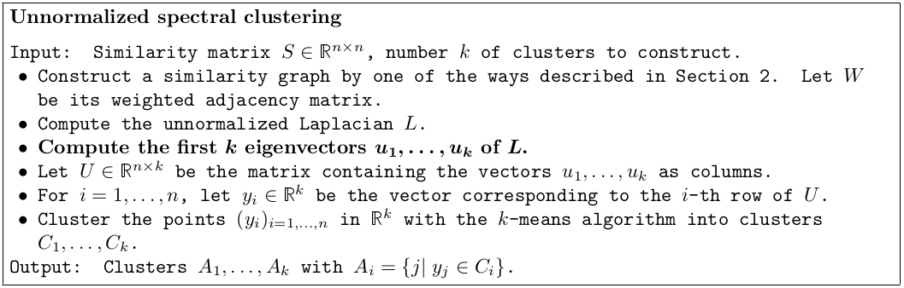
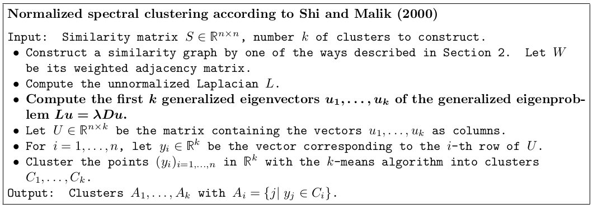
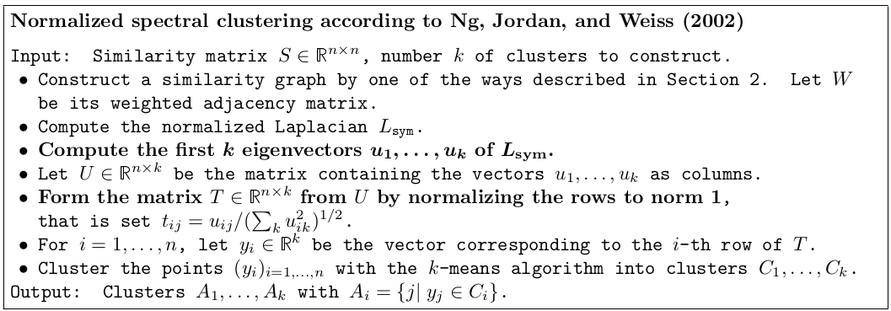
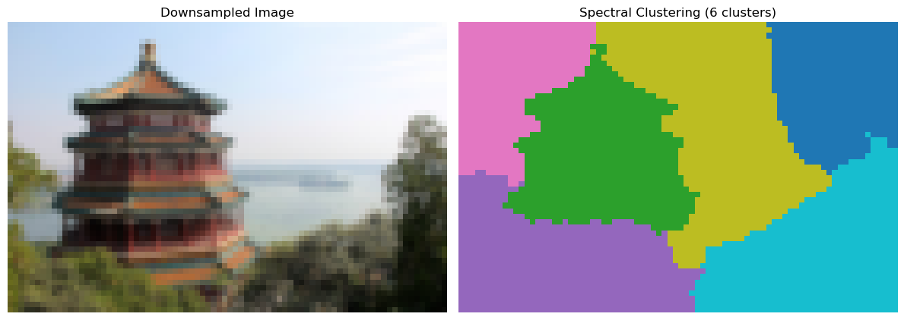

31. Clustering 2#
In the previous chapter, we discussed how \(K\)-means can be used to detect clusters in data living in the \(p\)-dimensional Euclidean space \(\mathbb{R}^p\). In practice, data may not be embedded in \(\mathbb{R}^p\) and, even if it is, we may not want to use the standard Euclidean distance to measure the distance between samples. Consider, for instance, the problem of automatically identifying objects in an image:
{kind=link}

Each pixel in the image has coordinates and a vector corresponding to a color. We can use that information to cluster the pixels and detect objects. The key information that we need is “how far away” pixels are? Here, we may want to measure the distance between pixels as a combination of their spatial distance and of their color.
We will now examine how one can produce clusters only from given distances or from a measure of similarity between samples. Our general approach will be to build an undirected graph from this information, and to look for clusters in the graph.
31.1. Basic graph theory#
By a graph, we mean a collection of vertices \(V = \{1,2,\dots,n\}\) and edges \(E \subseteq V \times V\) connecting them. We say that vertices \(i\) and \(j\) are adjacent if there is an edge between them, i.e., if \((i,j) \in E\). We will assume \((i,j) \in E\) if and only if \((j,i) \in E\) and consider the graph to be undirected (i.e., the edges of the graph are only connecting vertices and have no direction). Each edge between \(i\) and \(j\) may also have a weight \(w_{ij} \geq 0\). We will use the convention that \(w_{ij} = 0\) if \(i\) and \(j\) are not adjacent and that \(w_{ij} = w_{ji}\) since we are working with undirected graphs. In that case, the (weighted) adjacency matrix \(W_G = (w_{ij})_{i,j=1}^n\) of the graph \(G = (V,E,w)\) contains all the information about the graph.
{kind=link}

Fig. 31.1 An undirected weighted graph on \(5\) vertices.#
The degree \(d_i\) of vertex \(i\) is the sum of the weights of its neighbors:
When all the weights of adjacent neighbors are \(1\), the degree of a vertex coincides with its number of neighbors. The The degree matrix of \(G\) is the diagonal matrix \(D := \textrm{diag}(d_1, \dots, d_n)\) whose diagonal contains the degree sequence of \(G\).
Given a subset of vertices \(A \subseteq V\), we will denote the complement of \(A \subset V\) by \(\overline{A} = V \setminus A\). Also, for \(A \subseteq V\), we let \(\mathbf{1}_A = (f_1, \dots, f_n)^T \in \mathbb{R}^n\), where \(f_i = 1\) if \(v_i \in A\) and \(0\) otherwise.
31.2. Similarity graphs#
From now on, we will assume we are given samples \(x_1, \dots, x_n \in \mathcal{X}\) belonging to some set \(\mathcal{X}\), as well as a distance function \(d: \mathcal{X} \times \mathcal{X} \to [0,\infty)\) such that \(d(x_i, x_j)\) represents the distance between \(x_i\) and \(x_j\). The function \(d\) will typically be a proper distance function in the sense used in the theory of metric space, but we need no assumptions on \(d\) for the development of the process given below.
If instead of a distance between samples, one has a measure of similarity \(s: \mathcal{X} \times \mathcal{X} \to [0,\infty)\) between them, one can obtain a distance function by making similar samples close and dissimilar samples far away. This can be accomplished, for example, by setting \(d(x,y) := e^{-\lambda s(x,y)}\) for some \(\lambda > 0\).
We consider three popular ways of constructing a similarity graph from a distance function.
31.2.1. The \(\epsilon\)-neighborhood graph#
The \(\epsilon\)-neighborhood graph connect all points whose pairwise distances are smaller than some threshold \(\epsilon > 0\). We usually don’t weight the edges. The graph is thus a simple graph (unweighted, undirected graph containing no loops or multiple edges).
31.2.2. The \(k\)-nearest neighbor graph#
The goal of the \(k\)-nearest neighbor graph is to connect vertices \(i\) and \(j\) if \(j\) is among the \(k\) nearest neighbords of \(i\). However, this leads to a directed graph. We therefore define:
the \(k\)-nearest neighbor graph, where \(i\) is adjacent to \(j\) if and only if \(j\) is among the \(k\) nearest neighbors of \(i\) OR \(i\) is among the \(k\) nearest neighbors of \(j\).
the mutual \(k\)-nearest neighbor graph, \(i\) is adjacent to \(j\) if and only if \(j\) is among the \(k\) nearest neighbors of \(i\) AND \(i\) is among the \(k\) nearest neighbors of \(j\).
31.2.3. The fully connected graph:#
In the fully connected graph, all points are connected with edge weights inversely proportional to their distance (or proportional to their similarity). For example, one can use the Gaussian similarity function to represent a local neighborhood relationships:
where \(\sigma^2 > 0\) controls the width of the neighborhoods. In that case, points that are closer have a larger weight.
31.3. Example#
To illustrate the construction of a similarity graph, let us load an image from scikit-learn:
from sklearn.datasets import load_sample_image
import numpy as np
import matplotlib.pyplot as plt
# Load the china.jpg file
image = load_sample_image('china.jpg')
# Convert to float and flatten pixels
X = np.reshape(image, (-1, 3)) # each pixel is a point in RGB
plt.imshow(image)
plt.axis("off")
plt.show()
The shape of the image is:
image.shape
(427, 640, 3)
To keep calculations more managable, let us reduce the size of the image by a factor of \(8\).
from skimage.transform import resize
h, w, _ = image.shape
factor = 8
small = resize(
image,
(h // factor, w // factor, 3),
anti_aliasing=True,
preserve_range=True
)
small = small.astype(np.float32) / 255.0 # normalize to [0,1]
H, W, _ = small.shape
N = H*W
print("New image size: %d x %d\n N = total number of pixels = %d" % (H,W, N))
plt.imshow(small)
plt.axis("off")
plt.show()
New image size: 53 x 80
N = total number of pixels = 4240
Notice that each pixel has three color values corresponding to the itensity of Red, Green, and Blue (see the RGB model). Let us define a distance to measure how similar pixels are. We would like that distance to take into account both pixel locations and pixel colors. A popular choice is: for pixels \(P_1 = (x_1,y_1,r_1,g_1,b_1)\) and \(P_2 = (x_2,y_2,r_2,g_2,b_2)\), define
where \(\alpha^2, \beta^2 > 0\) are parameters that put more weight on either the coordinates or the pixel colors for determining the distance.
We will now create a matrix whose rows contains the image pixels and whose columns contain the coordinates and pixel colors. This will therefore be a \(N \times 5\) matrix where \(N\) is the total number of pixels of the image. We will use \(\alpha = 1.0\) and \(\beta = 0.05\) and multiply the columns by these values. Later on, when building the graph, we will simply compute the Euclidean distance between these weighted coordinates.
alpha = 1.0
beta = 0.05
ys, xs = np.meshgrid(np.arange(H), np.arange(W), indexing="ij") # List of pixel coordinates
X = np.column_stack([
alpha * small.reshape(-1, 3), # R, G, B
beta * xs.ravel(), # x-coordinate
beta * ys.ravel() # y-coordinate
])
print(X.shape) # Confirm that the shape is N x 5.
(4240, 5)
Pixels that are close in this metric are more similar. To illustrate this, let us pick a pixel in the “water” and display the pixels at distance at most \(\epsilon\) from it.
# Pixel roughly in water location
x = 50
y = 35
p = y * W + x
epsilon = 1.0
# To save the distance between our pixel and all the other pixels
distances = np.zeros(N)
for i in range(N):
distances[i] = np.linalg.norm(X[p,:]-X[i,:])
neighbors = np.where(distances <= epsilon)[0]
mask = np.zeros((N,), dtype=bool)
mask[neighbors] = True
mask = mask.reshape((H, W))
plt.figure(figsize=(8, 6))
dimmed = small * 0.2
masked_img = dimmed.copy()
masked_img[mask] = small[mask]
plt.imshow(masked_img)
plt.title("Pixels within ε of pixel (30,50)")
plt.axis('off')
plt.show()

You can experiment how the set of of neighbors changes as the reference pixel at coordinates \((50,35)\) changes and as the values of \(\alpha^2\) and \(\beta^2\) are changed.
Scikit-learn contains sevaral objects to construct similarity graphs. For instance, kneighbors_graph constructs a \(k\)-nearest neighbors graph. The “distance” mode builds the graph by using the Euclidean distance between the given samples.
from sklearn.neighbors import kneighbors_graph
k = 10
W_dist = kneighbors_graph(X, n_neighbors=k, mode="distance")
31.4. Digression: graph laplacians#
Before we explore how to produce a clustering from a graph, we make a digression to discuss various graph Laplacians that are associated to graphs. These are matrices that will play a crucial role in obtaining clusters. We will look at three common ones. Let \(W\) be the (weighted) adjacency matrix of a graph and let \(D\) be its degree matrix. We define:
The unnormalized graph Laplacian by:
The normalized symmetric graph Laplacian by:
The random walk graph Laplacian by:
We study the properties of each Laplacian in the subsections below.
31.4.1. The unnormalized Laplacian#
Proposition
The matrix \(L\) satisfies the following properties:
For any \(f \in \mathbb{R}^n\),
\(L\) is symmetric and positive semidefinite.
\(0\) is an eigenvalue of \(L\) with associated constant eigenvector \(\mathbf{1}\).
Proof: To prove (1),
(2) follows immediately from (1) since \(f^TLf \geq 0\) for all \(f \in \mathbb{R}^n\). (3) is immediately verified by computing \(L\mathbf{1}\). \(\square\)
A graph connected component is a maximal subgraph where every pair of vertices is connected by a path. For example, the following graph has two connected components:
{kind=link}

Fig. 31.2 A graph with two connected components.#
It is natural to ask for different connected components to not be part of the same cluster. The next result shows that the eigenvalues of \(L\) capture this information.
Proposition
Let \(G\) be an undirected graph with non-negative weights. Then:
The multiplicity \(k\) of the eigenvalue \(0\) of \(L\) equals the number of connected components \(A_1 ,\dots , A_k\) in the graph.
The eigenspace of eigenvalue \(0\) is spanned by the indicator vectors \(\mathbf{1}_{A_1}, \dots, \mathbf{1}_{A_k}\) of those components.
Proof: If \(f\) is an eigenvector associated to \(\lambda = 0\), then
It follows that \(f_i = f_j\) whenever \(w_{ij} > 0\). Thus \(f\) is constant on the connected components of \(G\). We conclude that the eigenspace of \(0\) is contained in \(\textrm{span}(\mathbf{1}_{A_1}, \dots, \mathbf{1}_{A_k})\). Conversely, it is not hard to see that each \(\mathbf{1}_{A_i}\) is an eigenvector associated to \(0\) (write \(L\) in block diagonal form).\(\square\)
The next subsection examine the analogous results for the normalized and the random walk Laplacians.
31.4.2. The normalized and random walk Laplacians#
Proposition
The normalized Laplacians satisfy the following properties:
For every \(f \in \mathbb{R}^n\), we have
\(\lambda\) is an eigenvalue of \(L_{\textrm{rw}}\) with eigenvector \(u\) if and only if \(\lambda\) is an eigenvalue of \(L_{\textrm{sym}}\) with eigenvector \(w = D^{1/2} u\).
\(\lambda\) is an eigenvalue of \(L_{\textrm{rw}}\) with eigenvector \(u\) if and only if \(\lambda\) and \(u\) solve the generalized eigenproblem \(Lu = \lambda Du\).
Proof: The proof of (1) is similar to the proof of the analogous result for the unnormalized Laplacian. (2) and (3) follow easily by using appropriate rescalings.
Proposition
Let \(G\) be an undirected graph with non-negative weights. Then:
The multiplicity \(k\) of the eigenvalue \(0\) of both \(L_{\textrm{sym}}\) and \(L_{\textrm{rw}}\) equals the number of connected components \(A_1 ,\dots , A_k\) in the graph.
For \(L_{\textrm{rw}}\), the eigenspace of eigenvalue \(0\) is spanned by the indicator vectors \(\mathbf{1}_{A_i}\), \(i=1,\dots, k\).
For \(L_{\textrm{sym}}\), the eigenspace of eigenvalue \(0\) is spanned by the vectors \(D^{1/2} \mathbf{1}_{A_i}\), \(i=1,\dots,k\).
Proof: Similar to the proof of the analogous result for the unnormalized Laplacian.
31.5. Spectral clustering#
We now return to the problem of producing a clustering from a similarity graph. We will explore an important approach called spectral clustering. As we will see, spectral clustering produces an embedding of the vertices of a graph in \(\mathbb{R}^p\) for a chosen value of \(1 \leq p \leq n\). Once the embedding has been obtained, we can cluster the vertices using any Euclidean clustering algorithm (e.g. \(K\)-means).
31.5.1. Graph cuts#
Let \(G = (V,E,w)\) be a weighted graph. Given subsets of vertices \(A, B \subseteq V\), we define the cut weight \(W(A,B)\) by:
In particular, when all edges have weight \(1\), the cut weight is the number of edges going from \(A\) to \(B\). This is the number of edges that need to be “cut” in order to separate \(A\) from \(B\). We also denote by \(|A|\) the number of vertices in \(A\) and we let \(\textrm{vol}(A) := \sum_{i \in A} d_i\).
Given a partition \(A_1, \dots, A_k\) of the vertices of \(G\), we let
Observe that a partition of the vertices having a small cut produces reasonable clusters in the sense that not too many edges go from one cluster to the other. The vertices in the different clusters are thus mostly “different”.
The min-cut problem consists of minimizing the cut over all partitions of the vertex set:
The min-cut problem can be solved efficiently when \(k=2\) (see Stoer and Wagner 1997). However, in practice, it often does not lead to satisfactory clusters. In many cases, the solution of min-cut simply separates one individual vertex from the rest of the graph.
{kind=link}

Fig. 31.3 Solving min-cut with \(k=2\) often results in disconnecting one vertex of small degree.#
Ideally, we would like clusters to have a reasonably large number of points. We therefore modify the min-cut problem. Two popular approaches are:
RatioCut (Hagen and Kahng, 1992):
Normalized cut (Shi and Malik, 2000):
Both objective functions take larger values when the clusters \(A_i\) are “small”. This results on clusters that are more “balanced”. However, unfortunately, the resulting problems are NP hard. See Wagner and Wagner (1993) for more details.
Spectral clustering provides a way to relax the RatioCut and the Normalized cut problems. The general strategy is to:
Express the original problem as a linear algebra problem involving discrete/combinatorial constraints.
Relax/remove the constraints.
We first consider the RatioCut problem with \(k=2\):
Given \(A \subset V\), let \(f \in \mathbb{R}^n\) be given by
Let \(L = D - W\) be the unnormalized Laplacian of \(G\). Then
since \(|A| + |\overline{A}| = |V|\), and \(W(A, \overline{A}) = W(\overline{A}, A)\). We have therefore proved that:
Moreover, note that
Thus \(f \perp \mathbf{1}\), i.e., \(f\) is perpendicular to the all-ones vector. Moreover,
Thus, we have showed that the Ratio-Cut problem is equivalent to
This is a discrete optimization problem since the entries of \(f\) can only take two values: \(\sqrt{|\overline{A}|/|A|}\) and \(-\sqrt{|A|/|\overline{A}|}\). As mentioned above, the problem is known to be NP hard.
A natural relaxation of the problem is to remove the discreteness condition on \(f\) and solve
Using properties of the Rayleigh quotients, it is not hard to show that the solution \(\tilde{f}\) of the above relaxed problem is an eigenvector of \(L\) corresponding to the second eigenvalue of \(L\).
To obtain clusters from \(\tilde{f}\), we can set
More generally, we can cluster the coordinates of \(f\) using \(K\)-means.
This is the unnormalized spectral clustering algorithm for \(k=2\).
The above process can be generalized to obtain \(k\) clusters. Given a partition \(A_1, \dots, A_k\) of \(V\), we define \(k\) indicator vectors
as follows:
Let \(H := (h_{ij}) \in \mathbb{R}^{n \times k}\). Note that the columns \(h_i\) of \(H\) are orthonormal, i.e., \(H^T H = I_{k \times k}\). A similar calculation as the one above shows that:
Now,
Thus,
So the problem
is equivalent to
As before, we consider a natural relaxation of the problem:
Using the Rayleigh-Ritz theorem, we obtain that the solution of the problem
is given by the matrix containing the first \(k\) (normalized) eigenvectors of \(L\). Similar to what we did when \(k=2\), we cluster the rows of the matrix \(H\) (containing the first \(k\) eigenvectors of \(L\) as columns) using the \(K\)-means algorithm. This is the general unnormalized spectral clustering algorithm with \(k\) clusters.
{kind=link}

Fig. 31.4 Summary of unnormalized spectral clustering. Source: von Luxburg, A tutorial on Spectral Clustering.#
As we saw above, relaxing the RatioCut problem leads to unnormalized spectral clustering. By relaxing the Ncut problem, we obtain the Normalized spectral clustering algorithm of Shi and Malik (2000).
{kind=link}

Fig. 31.5 Summary of normalized spectral clustering. Source: von Luxburg, A tutorial on Spectral Clustering.#
Note: The solutions of \(Lu = \lambda D u\) are the eigenvectors of \(L_{\textrm{rw}}\).
Another popular variant of the spectral clustering algorithm was provided by Ng, Jordan, and Weiss (2002). The algorithm uses \(L_{\textrm{sym}}\) instead of \(L\) (unnormalized clustering) or \(L_{\textrm{rw}}\) (Shi and Malik’s normalized clustering).
{kind=link}

Fig. 31.6 Summary of Ng et al.’s approach to spectral clustering. Source: von Luxburg, A tutorial on Spectral Clustering.#
31.6. Example: image clustering#
Let us go back to our downsampled image and look for \(6\) clusters using the SpectralClustering object from scikit-learn.
from sklearn.cluster import SpectralClustering
n_clusters = 6
sc = SpectralClustering(
n_clusters=n_clusters,
affinity="nearest_neighbors",
n_neighbors=10,
assign_labels="kmeans"
)
labels = sc.fit_predict(X)
labels_img = labels.reshape(H, W)
# ----------------------------------------------------------
# 4. Visualization
# ----------------------------------------------------------
plt.figure(figsize=(12, 5))
plt.subplot(1, 2, 1)
plt.imshow(small)
plt.title("Downsampled Image")
plt.axis("off")
plt.subplot(1, 2, 2)
plt.imshow(labels_img, cmap="tab10")
plt.title(f"Spectral Clustering ({n_clusters} clusters)")
plt.axis("off")
plt.tight_layout()
plt.show()

While not perfect, our clustering does a relatively good job at separating different relevant parts of the image. As above, you may want to play with the values of \(\alpha^2\) and \(\beta^2\) to see how they impact the clusters.